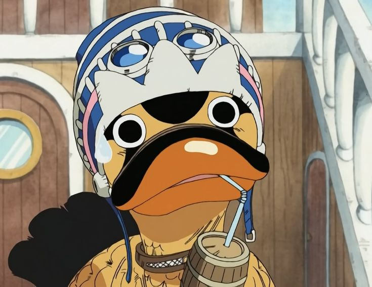

Karoo is a strong and loyal duck from the series "One Piece," and the best friend of Princess Vivi. He is known for his loyalty and bravery.

Why do we love Karoo?
His loyalty to Princess Vivi and his friends.
The strength and courage he shows despite being a duck.
His adorable personality and unique appearance.
Karoo's Heroic Stories
Saving Princess Vivi: When enemies planned to attack the princess, Karoo acted with lightning speed, lifting her onto his back and dashing through a hail of arrows. His incredible speed and agility left the attackers stunned as he carried her safely to the shore. Even the bravest of warriors were left in awe of his bravery.
The Desert Journey: In the scorching heat of the Alabasta desert, Karoo led the crew with unwavering determination. Despite the harsh conditions, he used his unparalleled sense of direction to navigate the treacherous terrain. At one point, he even dug a makeshift well to provide water for the entire crew, saving them from dehydration. Karoo's leadership and resilience were the key to their survival.
The Battle of Alabasta: During the epic battle of Alabasta, Karoo was a whirlwind of action. He charged fearlessly into the fray, using his quick reflexes to dodge attacks and strike back with unexpected force. When the enemy threatened to overwhelm the princess, Karoo single-handedly took on a squad of elite warriors, outsmarting them with his clever tactics and sheer willpower. His heroics were instrumental in securing the victory and restoring peace to the kingdom.
Rescue of Ace at Marineford: As the chaos of the Marineford War unfolded, Karoo made his grand entrance, flying in on a massive wave he had summoned himself. With a mighty quack, he dove into the heart of the battle, cutting through enemy lines with unparalleled speed. When Ace was moments away from execution, Karoo swooped in, breaking his chains with a powerful peck and carrying him to safety. Even the most hardened Marines were left speechless by the sight of this heroic duck in action.
Defeating the Sea King: In a legendary encounter with a Sea King that threatened to devour the entire crew, Karoo took to the skies. He circled the beast at such a high speed that he created a vortex, disorienting the massive creature. Then, with a fearless dive, he delivered a thunderous kick that sent the Sea King reeling into the depths of the ocean. This act of valor not only saved his friends but also solidified Karoo's status as a true legend of the seas.